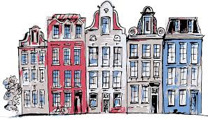

Las utilizan de forma mayoritaria, incluso pueden llevar a mas de una persona.

En este apartado vamos a mostrar distintos formatos de escritura:
Esto essuperindice
Por el contrarioeste es un subindice
Esta se utiliza para subrayar un texto:soy un texto subrayado
Con esta etiquetael texto aparece tachado
La escritura disminuye de tamaño
Resalta el texto escrito y lo muestra en cursiva
Con esta etiqueta vemos el texto en negrita; casi del mismo modo se muestra con la etiqueta srtong

| IMAGEN / TEXTO | TEXTO / IMAGEN |
|---|---|
|  | Una de los transportes recomendados para desplazarse por la ciudad es la bicicleta. Las utilizan de forma mayoritaria, incluso pueden llevar a mas de una persona. |
| En la parte superior podemos ver las construcciones mas típicas de Holanda. | |
Puedes ver mas tutoriales:
Pinchando en este enlace